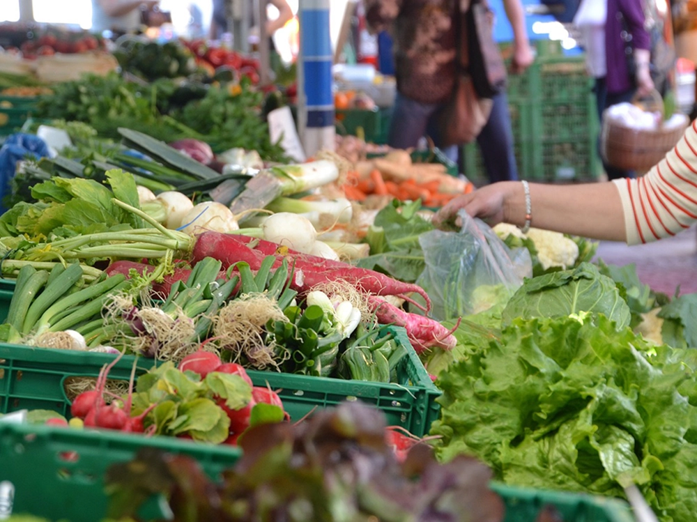
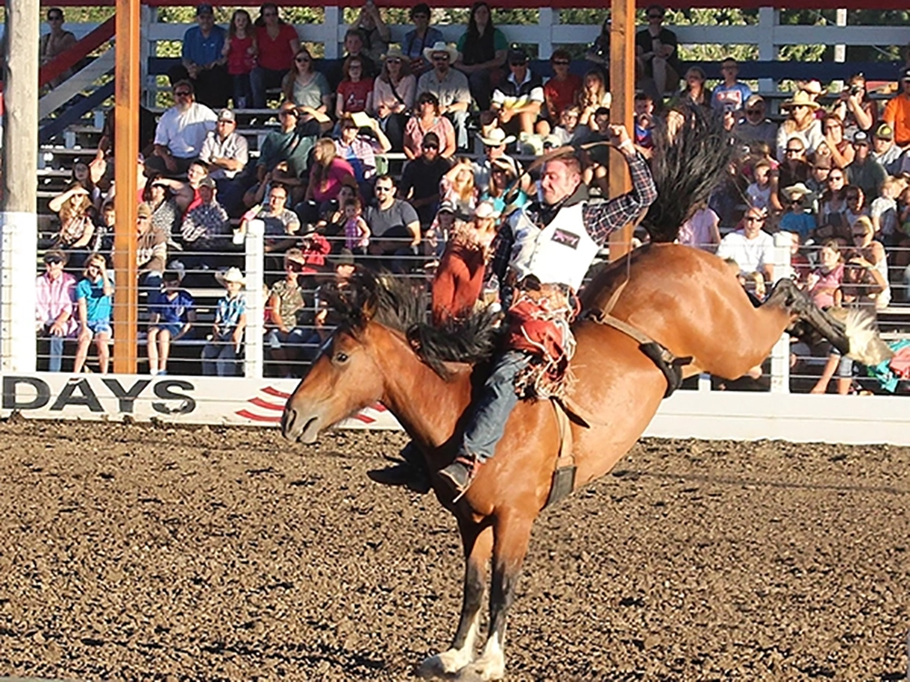

üåî
Home
Advocacy
Resources
Events
Demographics
Population of 13.5K people
Median Age of 45.6
Median Household Income of $85,000
Events
Rodeo
Family Health and Fitness
Farmers Market
Attractions
Bed and Breakfast
Hiking
Concerts

Fresh produce from local farmers
Capturing the Energy
Invigoratiing Adventures

Dust and Glory
Nature's Playground
Rustic Elegance
Kitchen Creations